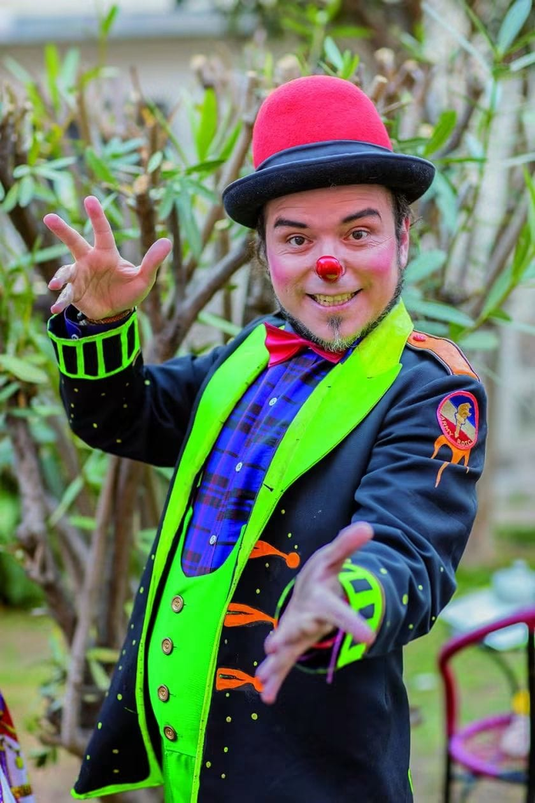
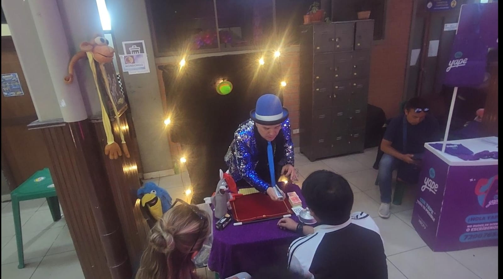
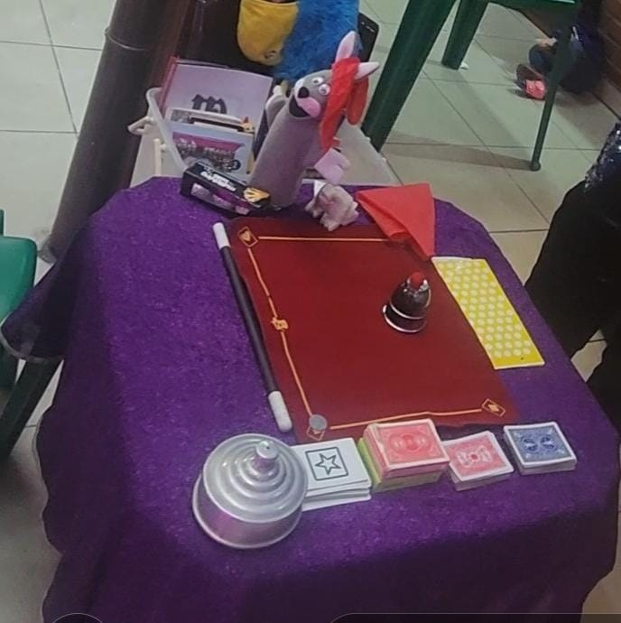
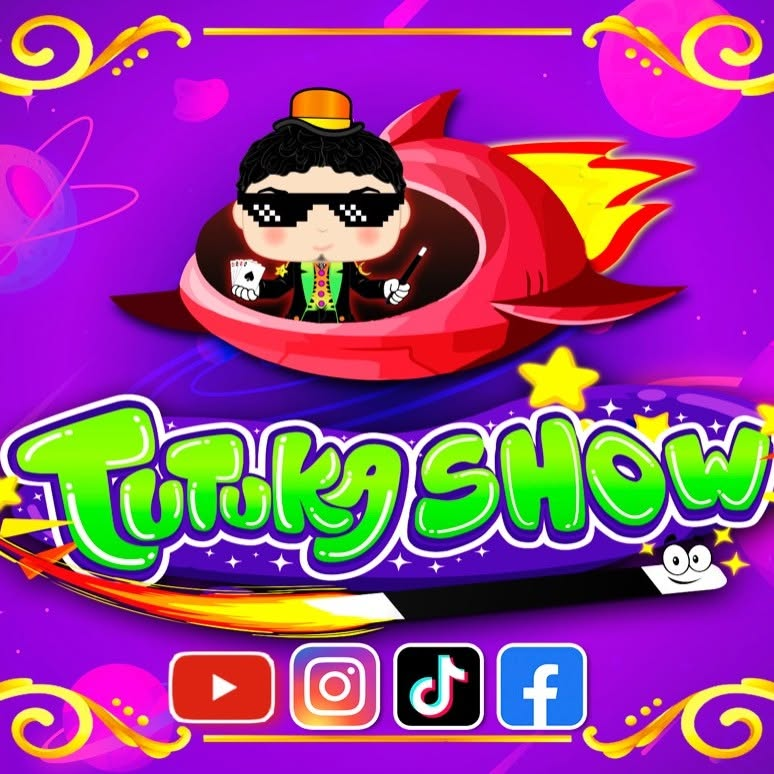

FEXPO ITSEC SUCRE 2026
¡Descubre los emprendimientos de esta feria!
¡Descubre los emprendimientos de esta feria!

Nombre completo: Lucas Correa
Nombre Artistico: El Mago Tutuka
Ubicacion del emprendimiento: En el Hotel Parador Santa Maria La Real,
Calle Bolivar #624
Presentación: ¡Dejá la diversión en nuestras manos! Vos ponés la fecha,
nosotros ponemos la magia.
Nuestra misión es transformar eventos ordinarios en recuerdos extraordinarios, combinando el asombro de la magia con la desconexión total que produce una buena carcajada.
Shows de fiestas infantiles, payasos, titeres, bodas, eventos corporativos, ademas de Clases de Magia e Ilusionismo, tambien clases de payaso


